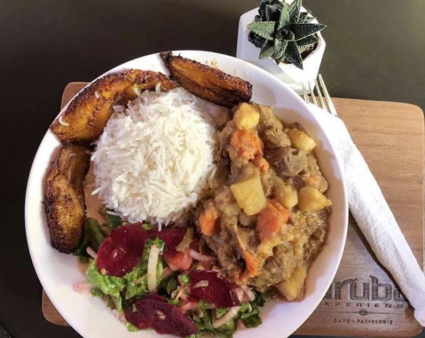
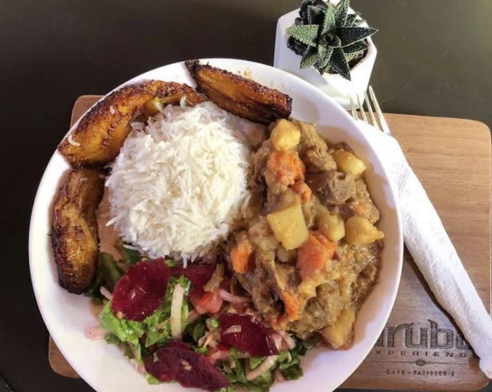

What To Do In Aruba
What To Do In Aruba  
A popular hot comfort food in Aruba is stew (stoba), enjoyed by Arubans despite the tropical climate. It’s typically made with beef or goat as its base, but calco stoba (conch stew) is also popular. Order soup or stew, and you’ll want plenty of pan bati to soak up the delicious broth. Pan bati translates to “beaten bread,” a reference to its flat shape. Made from corn flour typically mixed with some all-purpose flour, pan bati is traditionally cooked in a cazuela, a clay baking dish of Spanish origin.
Go off the beaten track and explore Aruba by UTV with this extreme expedition. Journey to Aruba’s natural pool, Conchi, where you can swim, snorkel, and cliff jump; visit the Indian caves, and admire some of Aruba’s most spectacular natural sites.